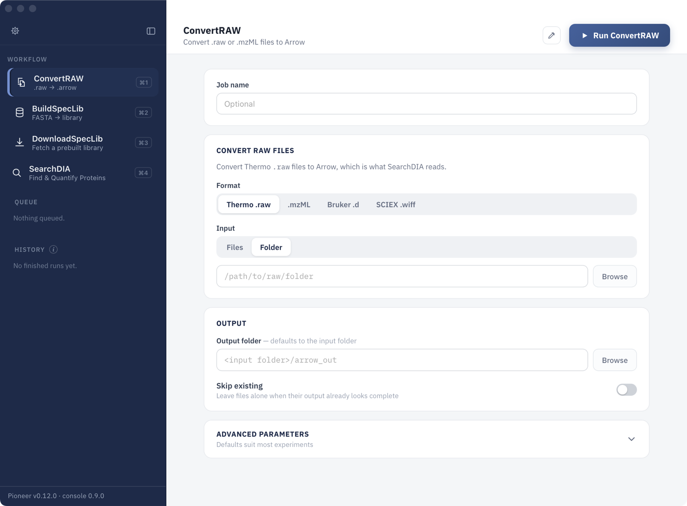
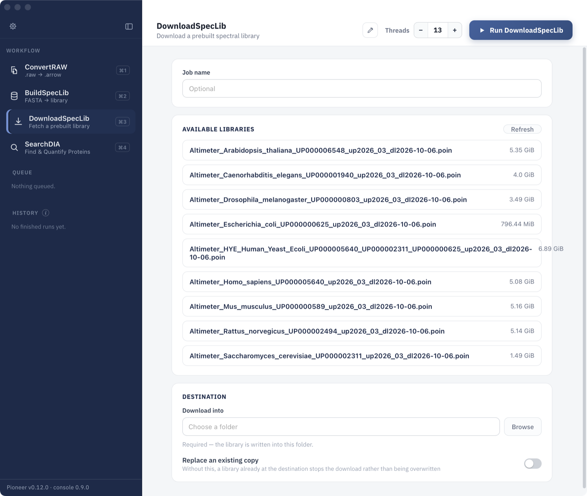
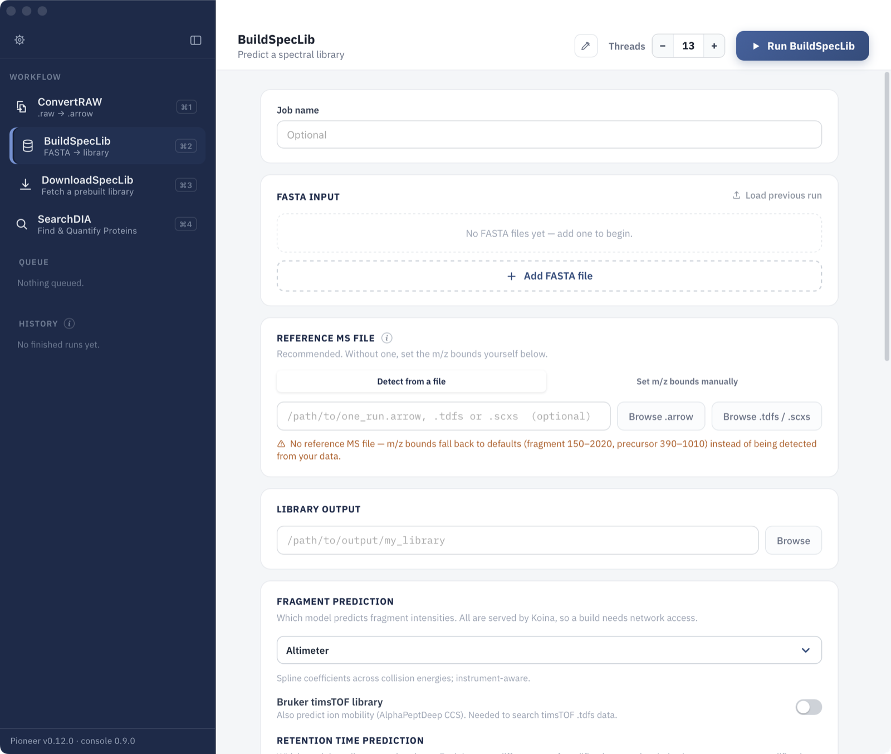
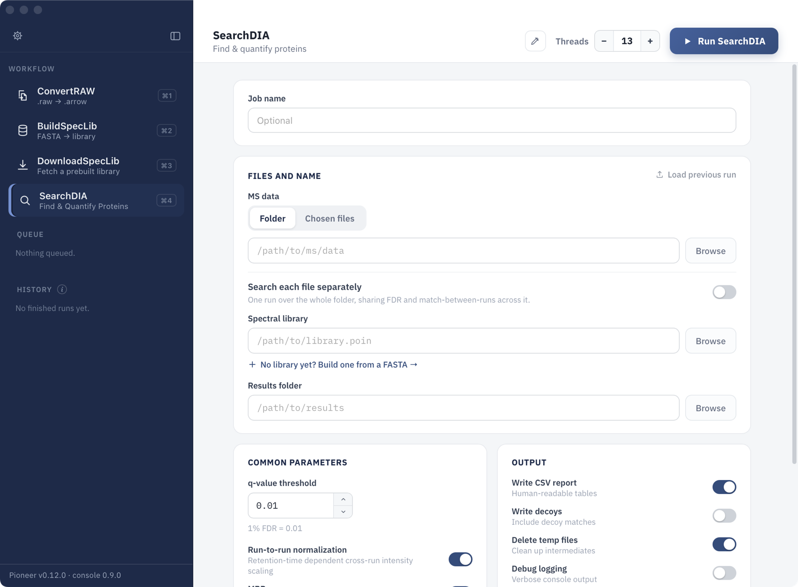

Quick Start Tutorial
A Pioneer analysis has three steps: convert the raw files, get a spectral library, and search. Each step is a screen in the Pioneer app.
Open the app from Applications (macOS), the Start Menu (Windows), or the applications menu (Linux). The sidebar lists the screens:
- ConvertRAW: convert vendor raw files (Thermo
.raw, Bruker.d, SCIEX.wiff) or.mzMLfiles into the format Pioneer searches. - BuildSpecLib: predict a spectral library from FASTA files.
- DownloadSpecLib: download a prebuilt spectral library.
- SearchDIA: identify and quantify peptides and proteins.
Started jobs appear under Queue while they run and under History when they finish. The version of Pioneer the app is using is shown at the bottom of the sidebar.
1. Convert Raw Files
Pioneer searches converted files rather than the vendor formats. Open ConvertRAW:

- Under Format, choose the data type: Thermo
.raw,.mzML, Bruker.d, or SCIEX.wiff. - Under Input, choose a folder of raw files, or individual files.
- Optionally choose an Output folder. By default the converted files go into an
arrow_outfolder inside the input folder. - Click Run ConvertRAW.
Thermo and mzML files become .arrow files, Bruker runs become .tdfs files, and SCIEX runs become .scxs files. Turn on Skip existing to resume a conversion without redoing finished files.
2. Get a Spectral Library
A spectral library holds the predicted fragment spectra and retention times of every peptide Pioneer searches for. Download a prebuilt library, or build one from FASTA files.
Download a Prebuilt Library
Open DownloadSpecLib:

- Pick a library from Available libraries. Prebuilt libraries cover several model organisms and a human, yeast, and E. coli mix.
- Choose the folder to Download into.
- Click Run DownloadSpecLib.
Build a Library from FASTA Files
Open BuildSpecLib:

- Click Add FASTA file for each protein database to include.
- Under Reference MS file, choose one converted run from the experiment. Pioneer reads the m/z ranges from it; without one, default ranges are used.
- Under Library output, choose where to write the library.
- Keep Altimeter as the fragment prediction model; it is the recommended default. For Bruker timsTOF data, turn on Bruker timsTOF library so the library includes ion mobility.
- Click Run BuildSpecLib.
Predictions are made by the Koina server, so building a library needs an internet connection.
3. Search
Open SearchDIA:

- Under MS data, choose the folder of converted files (or individual files).
- Under Spectral library, choose the
.poinlibrary from step 2. - Under Results folder, choose where to write the results.
- Check the common parameters. The defaults suit most experiments, including the 1% FDR (q-value 0.01) threshold.
- Click Run SearchDIA.
All files in the folder are searched together, sharing false discovery rate control and match-between-runs. Turn on Search each file separately to run each file as its own search instead.
4. Results
The results folder contains:
| File | Contents |
|---|---|
precursors_long.tsv / .arrow, precursors_wide.tsv / .arrow | Identified precursors and their quantities, one row per precursor and run (long) or one row per precursor with a column per run (wide) |
protein_groups_long.tsv / .arrow, protein_groups_wide.tsv / .arrow | The same for protein groups |
run_summary.tsv | One row of quality-control metrics per run |
qc_plots/ | Quality-control plots: retention time alignment, mass errors, collision energy, and quadrupole transmission |
pioneer_search_report.txt, pioneer_search_log.log | A summary of the search and its full log |
config.json | The parameters used, including defaults |
Search Results describes every column of these tables, the long and wide layouts, and the difference between the .tsv and .arrow files.
Command Line
Every step in the app is also a pioneer subcommand:
pioneer --help| Subcommand | What it does |
|---|---|
convert-raw | Convert Thermo .raw files |
convert-mzml | Convert .mzML files |
convert-bruker | Convert Bruker timsTOF .d folders |
convert-sciex | Convert SCIEX .wiff runs |
download | Download a prebuilt spectral library (--list shows what is available) |
params-predict, predict | Write a library-building parameter file, then build the library |
params-search, search | Write a search parameter file, then run the search |
Run pioneer <subcommand> --help for the options of each subcommand.
The same analysis from the command line:
pioneer convert-raw raw_dir --output-dir arrow_dir
pioneer download --list
pioneer download <library> --dest lib_dir
pioneer params-search lib_dir/<library> arrow_dir results_dir --params-path search_params.json
pioneer --threads=8 search search_params.json--threads sets the number of threads. To build a library instead of downloading one, use pioneer params-predict and pioneer predict. Parameter Configuration describes the settings in the parameter files.
Docker
Pioneer is also published as a Docker image. Mount the data folder (here the current folder, as /work) and run any subcommand:
docker pull dennisgoldfarb/pioneer:latest
docker run --rm -it -v $(pwd):/work -w /work dennisgoldfarb/pioneer:latest pioneer --helpImages are tagged by release (for example dennisgoldfarb/pioneer:v0.12.0).